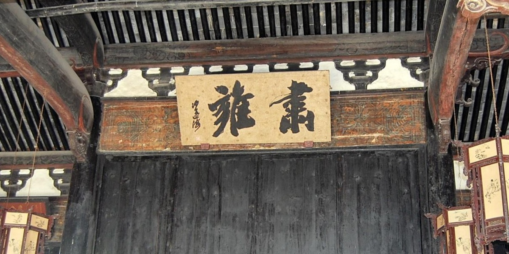
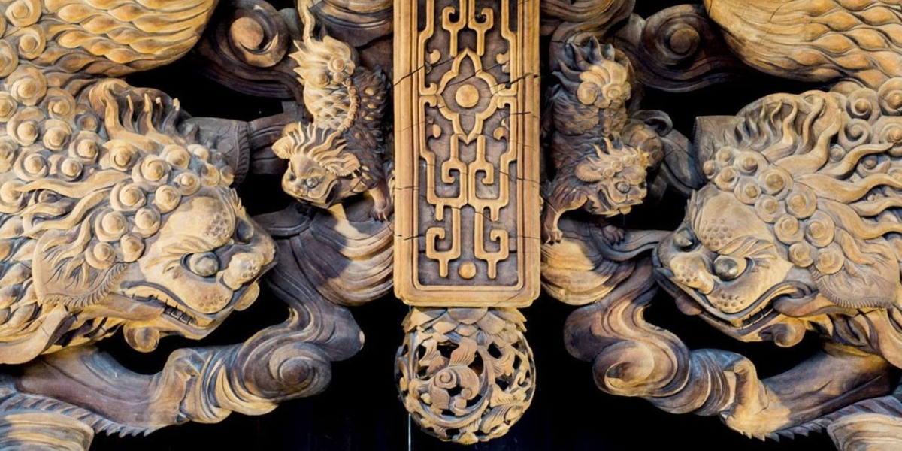

兴学养贤
雅溪卢氏，历来尊师重教，养贤好学，“子弟无不从师爱学，有志者习举业，迟钝者亦求通章句。“为父兄者，即便倾空垒债，砸锅卖铁亦供子弟上学。
明清时期，非科举不得仕至高官，学子孜孜以求的是金榜题名，学而优则仕更是雅溪卢氏重教的一大动力。
族规家训
卢氏家谱中收录有《司马氏居家杂仪》，二十世孙卢懋棨的《兰露斋家训》、《社约》及《续修宗谱凡例》，还有二十二世孙卢士儁编汇的的《日省要编》。它们宣扬的是儒家伦理忠孝节义，将道德说教与人的悟性结合起来，把社会伦理同宗族信仰结为一体，要求族人自觉遵守族规家训。
卢氏对贞操观念的宣扬，虽不见诸家训社约，但在实际生活中“饿死事极小，失节事极大”的贞节观妇孺皆知、深入人心。
卢氏总祠堂有别于其他宗族祠堂，它的功能并非祭祀、礼仪、娱乐、议事样样齐全。除祭祀迁雅溪前九代先祖以外，它主要行使族权的“司法”功能，遇有关系全族利益的大事，或处理族人行为不轨，有悖族规,邻里纠纷时，先由各房派推举的祠堂甲长合议调处、调处未果的，则敲鼓“开祠堂门”，让族人公决审处。
婚丧礼仪
祭礼——雅溪卢氏人丁兴旺，内部血缘关系房派很多，族人散居于不同的厅堂、乡村，形成了宗族一房派一支派的宗族内部结构。与此相适应，建造祠堂依房分成大小宗法观念，形成大宗祠、支祠结构的祠堂，正如“族必有祠，合姓祖先统萃于此，服之亲者，则又为支祠。”
婚娶——旧时婚姻，多由父母之命、媒妁之言而成配偶。同时，也有“门户不当”“八字不合”、“生肖相克”等禁忌。婚娶的习俗一般是：（1）探亲；（2）压日子；（3）定亲；（4）接亲
丧葬——封建社会十分重视丧葬活动，并把它与封建纲常之一的”孝道“联系在一起，对丧葬乃至于葬后的祭奠活动，都作了许多繁琐的规定。儒家经典《仪礼》、《礼记》对丧礼有着详细的记载。我们仍可从雅溪卢氏的丧葬活动当中，可以领会到其遗风流韵。
节庆活动
社戏——卢宅人，历来喜欢看戏，甚至自买行头办戏班做戏。凡一年一度的佳节喜庆，卢宅都要请戏班子做社戏。
元宵闹灯——元宵闹灯，是群众喜闻乐见的娱乐活动。
迎龙灯——一年一度的迎龙灯，家家户户争相参加。
荷花灯——卢宅的荷花灯可与盛名远扬的李宅荷花灯相媲美。
挂花灯——卢宅花灯，始于何时已无法考证。明中叶，挂花灯已成为卢宅元宵节的重要文娱活动。
诗词精选
十五夜出闱口占
卢楷
夜班归来月正中，满身香带桂花风。
流莹数点楼台静，孤鹤一声天地空。
沽酒唤醒茅店梦，狂歌惊起石潭龙。
倚栏拂拭青峰剑，万丈毫光透九重。
雪晴
卢睿
元冥剪水作花飘，晓觉初晴犹未消。
屏列玉峰明霁色，僵余琼树倚空摇。
樵人启户帘初卷，过客行天马渡桥。
何处酣歌春蔼蔼，江村万艇动渔桡。